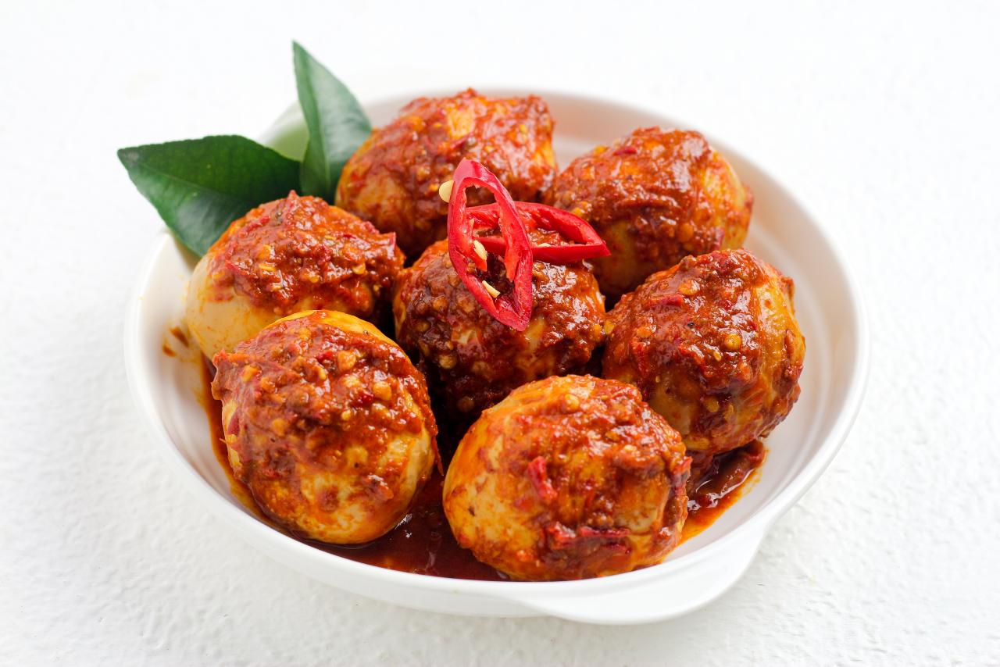

🍳 Resep Telur Balado

Tentang Telur Balado
Telur balado merupakan salah satu masakan rumahan yang menggunakan telur rebus yang dimasak bersama sambal balado. Hidangan ini memiliki cita rasa pedas, gurih, dan cocok disajikan bersama nasi hangat.
Bahan-bahan
| No | Bahan | Jumlah |
|---|---|---|
| 1 | Telur ayam | 5 butir |
| 2 | Cabai merah | 5 buah |
| 3 | Bawang merah | 4 siung |
| 4 | Bawang putih | 2 siung |
| 5 | Tomat | 1 buah |
| 6 | Garam | Secukupnya |
| 7 | Minyak goreng | Secukupnya |
Cara Membuat
- Rebus telur hingga matang, kemudian kupas kulitnya.
- Goreng telur sebentar hingga bagian luarnya berwarna kecokelatan.
- Haluskan cabai merah, bawang merah, bawang putih, dan tomat.
- Tumis bumbu hingga harum dan matang.
- Masukkan telur ke dalam bumbu balado.
- Aduk hingga bumbu merata dan meresap.
- Telur balado siap disajikan.